건축기사 (2004-03-07 기출문제)
1과목: 건축계획
1. 톤헤론의 움직이는 도시의 계획안은 어느 건축운동과 관계가 깊은 것인가?
- CIAM
- ARCHIGRAM
- POST-MODERNISM
- BAUHAUS
(정답률: 36%)

2. 사무소 건축의 실단위 계획의 특징에 대한 설명으로 옳지 않은 것은?
- 개실 시스템은 독립성과 쾌적감의 이점이 있다.
- 개방식 배치는 개실 시스템보다 공사비가 저렴하다.
- 오피스 랜드스케이프(Office Landscape)는 개실 시스템을 위한 실단위계획이다.
- 개방식 배치는 전면적을 유용하게 사용할 수 있다.
(정답률: 70%)
3. 상점계획에 대한 설명 중 옳지 않은 것은?
- 고객의 동선은 일반적으로 짧을수록 좋다.
- 점원의 동선과 고객의 동선은 서로 교차되지 않는 것이 바람직하다.
- 대면판매형식은 일반적으로 시계, 귀금속, 의약품 상점 등에서 쓰여진다.
- 진열케이스, 진열대, 진열장 등이 입구에서 안을 향하여 직선적으로 구성된 평면배치는 주로 침구코서, 식기코너, 서점 등에서 사용된다.
(정답률: 80%)
4. 건축 계획에서 동선(動線)이 가지는 요소와 가장 관계가 먼 것은?
- 하중
- 빈도
- 속도
- 폭(너비)
(정답률: 47%)
5. 공동주택의 이점이 아닌 것은?
- 세대당 건설비, 유지비를 절감할 수 있다.
- 생활 협동체를 구성할 수 있다.
- 공동 시설을 설치할 수 있다.
- 생활의 변화에 대해 자유롭게 대응할 수 있다.
(정답률: 88%)
6. 렌터블(rentable)비가 높다라는 말을 설명한 것으로 가장 적절한 것은?
- 서비스를 보다 좋게 할 수 있다.
- 임대료 수입이 더 증가할 수 있다.
- 코어부분에 대한 면적을 보다 많이 확보할 수 있다.
- 주차장 공간을 보다 많이 확보할 수 있다.
(정답률: 75%)
7. 대규모 미술관의 채광 방식으로 가장 적당치 않은 것은?
- 정측광창 방식(top side light monitor)
- 고측광창 방식(clerestory)
- 정광창 방식(top light)
- 측광창 방식(side light)
(정답률: 49%)
8. 다음의 병원 계획에 관한 설명 중 옳지 못한 것은?
- 수술실 앞에 통로, 홀 등을 설치하지 않는다.
- 입원환자와 외래환자의 출입구는 분리시킨다.
- 병실 출입구는 외여닫이로 하되, 1.15m 이상으로 한다.
- 종합병원의 간호 단위는 50병상 정도이다.
(정답률: 65%)
9. Closed system의 외래진료부 계획에 대한 설명으로 부적당한 것은?
- 환자의 이용이 편리하도록 2층 이하에 두도록 한다.
- 내과 계통은 소진료실을 다수 설치한다.
- 중앙주사실, 약국은 정면 출입구에서 멀리 떨어진 곳에 둔다.
- 외과계통의 각과는 1실에서 여러 환자를 돌볼 수 있도록 크게 한다.
(정답률: 84%)
10. 공장건축의 지붕형에 대한 기술 중 옳지 않은 것은?
- 뾰족지붕 - 직사광선을 어느 정도 허용하는 결점이있다.
- 솟을지붕 - 채광, 환기에 적합한 방법이다.
- 톱날지붕 - 북향의 채광창으로 하루종일 변함 없는 조도를 유지할 수 있다.
- 샤렌지붕 - 기둥이 많이 소요되는 단점이 있다.
(정답률: 72%)
11. 초등학교 건축계획에 관련된 사항 중 적절한 것은?
- 저학년 교실은 달턴형이 적합하며 옥외 공간과 연결하는 것이 좋다.
- 시청각관계실은 각 교과에 널리 이용되기 때문에 일반교실, 특별교실 등에 가까운 것이 좋다.
- 교사를 위한 공간은 사무의 능률을 높이기 위해 크게 하나의 공간으로 하는 것이 바람직하다.
- 도서실은 폐가식으로 하며 학교의 모든 곳으로부터 편리한 위치에 배치하는 것이 좋다.
(정답률: 50%)
12. 병원건축계획에 관한 기술 중 가장 부적당한 것은?
- 도심부에 병원건축을 계획할 경우 블록타입(blocktype) 보다는 파빌리온 타입(pavillion type)이 유리하다.
- 중앙진료부는 외래부와 병동부의 중간에 위치하는 편이 좋다.
- 병동부의 전체면적에 대한 비율은 40% 정도가 적당하다.
- 심근,협심증환자를 대상으로 집중치료하는 간호단위를 C.C.U(Coronary Care Unit)라 한다.
(정답률: 69%)
13. 쇼핑센터의 몰(mall)의 계획에 대한 설명으로 옳지 않은것은?
- 전문점들과 중심 상점의 주출입구는 몰에 면하도록 한다.
- 중심상점들 사이의 몰의 길이는 150m를 초과하지 않아야 하며, 길이 40~50m 마다 변화를 주는 것이 바람직하다.
- 몰에는 자연광을 끌어들여 외부공간과 같은 성격을 갖게 한다.
- 다층으로 계획할 경우, 다층 및 각층간의 시야의 개방감이 적극적으로 고려되어야 한다.
(정답률: 63%)
14. 무대 주위의 벽에 6-9m 높이로 설치되는 좁은 통로를 무엇이라고 하는가?
- 그린룸
- 호리존트
- 플라이 갤러리
- 슬라이딩 스테이지
(정답률: 72%)
15. 다음의 한국 근대건축 중 로마네스크 양식을 취하고 있는것은?
- 명동성당
- 정관헌
- 서울 성공회성당
- 정동교회
(정답률: 47%)
16. 극장의 객석 계획에 관한 설명 중 잘못된 것은?
- 인형극 등을 관람하기에 적합한 가시거리는 15m이다.
- 객석의 세로통로는 무대를 중심으로 하는 방사선상이 좋다.
- 좌석을 엇갈리게 배열(stagger seats)하는 방법은 객석의 바닥구배가 완만할 경우에는 사용할 수 없으며 통로 폭이 좁아지는 단점이 있다.
- 객석은 무대의 중심 또는 스크린의 중심을 중심으로 하는 원호의 배열이 이상적이다.
(정답률: 72%)
17. 페리(C.A.Perry)의 근린주구 이론의 기초가 되는 시설이 아닌 것은?
- 초등학교
- 병원
- 도서관
- 파출소
(정답률: 50%)
18. 다음 주택의 세부계획 중 거실에 대한 설명으로 옳지 않은 것은?
- 주택의 각 실은 거실에서부터 발전 분화되어야 한다.
- 거실은 정원과 유기적으로 시각적으로 연결되는 것이 좋다.
- 거실의 넓이는 실내거주인수에 소요되는 면적만으로 정해진다.
- 거실은 가족 공동생활의 중심이 되는 장소이다.
(정답률: 77%)
19. 아파트의 형식 중 메조네트형에 대한 설명으로 옳지 않은 것은?
- 주택내의 공간의 변화가 있으며 유효면적이 증가한다
- 주거단위면적의 규모에는 영향을 받지 않으나 피난계단 계획에 어려움이 따른다.
- 트리플렉스형은 하나의 주거단위가 3층형으로 구성되는 것이다.
- 양면개구에 의한 일조, 통풍 및 전망이 좋다.
(정답률: 54%)
20. 미술관 계획에 대한 설명으로 부적당한 것은?
- 연속 순회형식은 중심부에 하나의 큰 홀을 두고 그 주위에 각 전시실을 배치하여 자유로이 출입하는 형식으로 대규모의 전시실에 적합하다.
- 갤러리 형식은 복도에서 각 실에 직접 들어갈 수 있으며 필요시 독립적으로 폐쇄할 수 있다.
- 이용자의 출입구는 직원출입구와 구분한다.
- 동선에는 이용자, 직원 등의 사람동선과 전시자료 등의 물건동선이 있다.
(정답률: 70%)
2과목: 건축시공
21. 유리공사에 관한 설명으로 옳지 않은 것은?
- 망입유리는 방화, 방도용으로 사용된다.
- 복층유리는 단열목적 유리이다.
- 열선흡수유리는 실내의 냉방효과를 좋게하기 위해 사용된다.
- 보통유리는 요양소에서 사용된다.
(정답률: 45%)
22. 공사계약 방식에는 전통적인 계약방식과 업무범위에 따른 계약방식이 있는데 다음 중 업무범위에 따른 계약방식의 종류가 아닌 것은?
- 공동도급 계약방식(Joint Venture Contract)
- 턴키 계약방식(Turn-key Contract)
- 공사관리 계약방식(Construction Management Contract)
- 프로젝트관리 계약방식(Program Management or Project Management Contract)
(정답률: 42%)
23. 다음 기술 중 QC 활동의 도구가 아닌 것은?
- 특성요인도
- 파레토그램
- 층별
- 기능계통도
(정답률: 53%)
24. 모르타르 또는 콘크리트의 시공에 있어서 상당량 포함되어도 유해(有害)하지 않은 물질은?
- 당류
- 유지류
- 희염산
- 규조토
(정답률: 54%)
25. 말뚝시공법 중 제자리말뚝에서 기계굴삭공법이 아닌 것은?
- 리버스서큘레이션공법
- 관입공법
- 보아홀공법
- 심초공법
(정답률: 47%)
26. 유리섬유, 합성섬유 등의 망상포를 적층하여 도포하는 도막방수 공법은?
- 코팅공법
- 라이닝공법
- 멤브레인공법
- 루핑공법
(정답률: 40%)
27. 길이4.6m, 높이3.4m의 벽을 두께1.0B와 0.5B로 각각 쌓을때의 벽돌(표준형) 구입량의 조합으로 알맞는 수량은?(오류 신고가 접수된 문제입니다. 반드시 정답과 해설을 확인하시기 바랍니다.)
- 1.0B - 2,447매 0.5B - 1,232매
- 1.0B - 2,331매 0.5B - 1,173매
- 1.0B - 2,401매 0.5B - 1,208매
- 1.0B - 2,464매 0.5B - 1,207매
(정답률: 17%)
28. 콘크리트의 이어붓기에 관한 기술 중 부적당한 것은 어느것인가?
- 보는 단부에서 이어치기 한다.
- 보와 상판(바닥슬래브)은 이어치기를 하지 않고 동시에 칠 필요가 있다.
- 상판은 될 수 있는 한 중앙부근에서 수직으로 이어친다.
- 기둥의 이어치기는 하단에서 한다.
(정답률: 34%)
29. 콘크리트의 반죽질기 시험방법이 아닌 것은?
- 블리딩시험
- 슬럼프시험
- 관입시험
- 리몰딩시험
(정답률: 20%)
30. 철근 콘크리트 건축물 6m × 10m 평면에 높이가 4m 일 때 동바리 소요량은 몇 공 m3가 되는가?
- 21.6
- 216
- 240
- 264
(정답률: 51%)
31. 돌의 맞댐면에 모르타르 또는 콘크리트를 깔고 뒤에는 잡석다짐으로 하는 견치돌 석축쌓기 방법은?
- 귀갑쌓기
- 건쌓기
- 찰쌓기
- 모르타르 사춤쌓기
(정답률: 36%)
32. 유성페인트의 정벌칠에서 광택과 내구력을 증가시키는데 좋은 것은 다음 중 어느 것인가?
- 드라이어
- 건성유(보일드유)
- 스티풀
- 캐슈
(정답률: 60%)
33. 건축공사는 시공 전에 수립하는 시공계획이 공사의 성패를 좌우한다 할 수 있다. 다음 중 시공 계획의 원칙이라할 수 없는 항목은?
- 작업량을 최소화 한다.
- 각 작업 또는 설비는 가능한 한 장기간 균일한 작업량을 할 수 있게 한다.
- 기계설비에 다소 비용을 요해도 인건비를 절감하는 방안을 모색한다.
- 설비의 공비시간(空費時間)을 크게 한다.
(정답률: 61%)
34. 포졸란(pozzolan)을 사용한 콘크리트의 효과 중 옳지 않은 기술은?
- 수밀성이 커진다.
- 경화작용이 늦어지므로 장기강도가 낮아진다.
- 해수 등에 화학적 저항이 크다.
- 워어커빌리티(workability)가 좋아지고 블리이딩(bleeding) 및 재료 분리가 감소된다.
(정답률: 62%)
35. 흙의 함수비에 관한 설명 중 옳지 않은 것은?
- 함수비를 감소시키기 위해서는 Sand Drain 공법이 사용된다.
- 함수비가 크면 전단강도가 적어진다.
- 모래지반에서 함수비가 크면 내부마찰력이 감소된다.
- 점토지반에서 함수비가 크면 점착력이 증가한다.
(정답률: 50%)
36. 지붕공사에 주로 사용하는 방수 재료로 옳은 것은?
- 아스팔트 콤파운드
- 스트레이트 아스팔트
- 아스팔트 피치
- 블로운 아스팔트
(정답률: 21%)
37. 생콘크리트 측압에 대한 기술로 옳은 것은?
- 슬럼프값이 크고, 빈배합일수록 크다.
- 벽두께가 두껍고, 부어넣는 속도가 느릴수록 크다.
- 시공연도가 좋고, 진동기를 사용하면 측압이 증가된다.
- 부어넣기 높이가 기둥에서 1.5m, 벽에서 1m의 경우 측압의 증가는 없다.
(정답률: 38%)
38. 다음 중 철골조 기둥에서 주각부에 대한 설명으로 틀린 것은?
- 주각부의 인장력은 주각의 연결 Rivet이 부담한다.
- 기둥의 직압력을 기초에 전달할 수 있도록 Base Plate를 기둥 하부에 단다.
- 주각부의 Base Plate의 두께는 휨응력에 저항할 수 있는 두께를 설치한다.
- 주각부에 사용한 Anchor Bolt는 φ 9∼32mm가 많이 쓰인다.
(정답률: 34%)
39. 다음중 건축 공사비의 예측을 위한 형태에 의한 단가의 분류로서 바르게 구성된 것은?
- 재료단가, 노무단가, 복합단가, 공종단가
- 재료단가, 노무단가, 복합단가, 외주단가
- 재료단가, 노무단가, 복합단가, 합성단가
- 재료단가, 노무단가, 부위단가, 외주단가
(정답률: 16%)
40. 웰포인트 (Well point)공법에 관한 설명 중에서 틀린 것은?
- 흙막이의 토압이 줄어든다.
- 웰포인트는 비교적 지하 수위가 얕은 모래지반의 배수에 유리하다.
- 인접지반에 침하를 야기시키기 쉽다.
- 모래지반 보다 점토질 지반에서 탈수효과가 크다.
(정답률: 68%)
3과목: 건축구조
41. 강도설계법에서 휨부재 설계시 인장철근비에 대한 설명으로 옳은 것은?
- 균형철근보로 설계한다.
- 과다철근보로 설계한다.
- 균형철근비의 75% 이하인 과소철근보로 설계한다.
- 균형철근비의 80% 이하인 과소철근보로 설계한다.
(정답률: 40%)
42. 목구조에 관한 설명 중 옳지 않은 것은?
- 왕대공 지붕틀이 연직하중만을 받을 경우 왕대공은 압축재이다.
- 가새는 목조벽체를 수평력에 견디게 한다.
- 왕대공 지붕틀의 간사이는 20m 정도까지는 할 수 있으나 보통 10m 정도로 한다.
- 층도리는 2층 마루바닥이 있는 부분에 수평으로 대는 가로재이다.
(정답률: 26%)
43. 강도설계법에서 그림과 같은 띠철근을 가진 기둥의 설계 축하중 ø Pn의 최대값은 약 얼마인가? (단, fy=400MPa(=4000kgf/cm2), fck=21MPa(=210kgf/cm2), 강도저감계수 ø =0.7, 주근 : 8-D22(Ast=3096mm2), 띠철근 : D10@300, 보조띠철근 : D10@900)
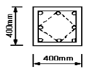
- 2585kN(=258500kgf)
- 2423kN(=242300kgf)
- 2262kN(=226200kgf)
- 1984kN(=198400kgf)
(정답률: 47%)
44. 철근콘크리트 건물에 있어서 신축줄눈(expansion joint)을 설치해야 하는 위치로 부적당한 것은?
- 기존건물과 증축건물과의 접합부
- 저층의 긴 건물과 고층건물과의 접속부
- 길이 30m를 넘는 긴 건물
- 두 고층 사이에 있는 긴 저층건물
(정답률: 40%)
45. 벽돌구조에 관한 사항 중 옳지 않은 것은?
- 각 층의 대린벽으로 구획된 벽에서는 문꼴의 나비의 합계는 그 벽길이의 1/2 이하로 한다.
- 문꼴 위와 그 바로 위의 문꼴과의 수직거리는 60cm이상으로 한다.
- 내력벽으로 둘러싸인 부분의 바닥면적은 60m2 를 넘을 수 없다.
- 나비 180cm가 넘는 문꼴의 상부에는 철근콘크리트 인 방보를 설치한다.
(정답률: 27%)
46. 독립기초가 모래지반 위에 놓여 있을 때 중심 압축력에 대한 지반 반력의 분포로서 합당한 것은?
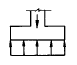
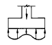
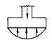
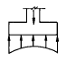
(정답률: 52%)
47. 철근콘크리트보에서 전단보강철근으로 볼 수 없는 것은?
- 부재의 축에 직각인 스터럽
- 주인장철근에 30° 각도로 구부린 굽힘철근
- 스터럽과 굽힘철근의 조합
- 주인장철근에 30° 각도로 설치되는 스터럽
(정답률: 24%)
48. 강도설계법으로 설계하는 경우 균형단면의 직사각형보에 서 fck=24MPa(=240㎏f/㎝2 ), fy=350MPa(=3500㎏f/㎝2 ) 일 때 균형철근비ρ b 값은? (단, Es=2.0×105MPa(=2.0×106㎏f/㎝2 )임)
- 2.41%
- 2.72%
- 3.13%
- 3.54%
(정답률: 32%)
49. 직경 24mm의 봉강에 6.5tf의 인장력이 작용할 때 인장응력의 크기는 약 얼마인가?
- 1280kgf/cm2
- 1360kgf/cm2
- 1440kgf/cm2
- 1500kgf/cm2
(정답률: 42%)
50. 벽돌벽의 균열원인과 가장 거리가 먼 것은?
- 문꼴의 불균형배치
- 기초의 부동침하
- 하중의 불균등분포
- 벽돌벽의 공간쌓기
(정답률: 49%)
51. 그림과 같은 겔버보에서 B점의 휨모멘트는?
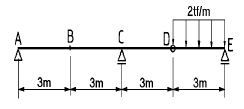
- -2.25 tf· m
- -4.5 tf· m
- -9 tf· m
- 0 tf· m
(정답률: 29%)
52. 인장철근량 As=1500mm2 인 단철근 장방향보에서 사각형 응력분포깊이 a는 약 얼마인가? (단, fck = 24MPa(240㎏f/cm2), fy = 300MPa(3000㎏f/cm2),b = 300mm, d = 500mm)
- 6.5㎝
- 7.4㎝
- 8.2㎝
- 5.0㎝
(정답률: 51%)
53. 그림과 같은 트러스에서 압축재의 수는 몇 개인가?
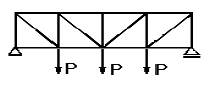
- 8개
- 9개
- 7개
- 10개
(정답률: 47%)
54. 그림과 같은 캔틸레버보에 집중하중 P가 작용할 때 휨모멘트도로 맞는 것은?
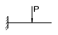
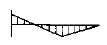
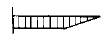
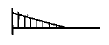
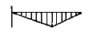
(정답률: 33%)
55. 그림과 같은 기초의 정사각형 저면에 생기는 접지압응력도의 분포도로 올바른 것은? (단, 편심거리ℓ = L/6 으로 한다.)
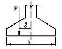
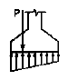
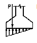
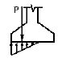
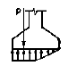
(정답률: 47%)
56. 그림과 같은 단면의 단면계수는 약 얼마인가?
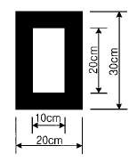
- 2333cm3
- 2556cm3
- 3000cm3
- 42000cm3
(정답률: 39%)
57. 벽돌내쌓기에 대한 설명 중 옳지 못한 것은?
- 벽체에 마루를 놓거나 또는 방화벽으로 처마부분을 가리기 위해 벽돌을 벽면에서 부분적 또는 길게 내쌓는 것을 말한다.
- 보통 1/8B 1켜씩 또는 1/4B 2켜씩 내쌓는다.
- 내미는 한도는 최대 1.5B로 한다.
- 내쌓기는 마구리쌓기로 하는 것이 좋다.
(정답률: 29%)
58. 그림과 같은 구조에서 기둥 부재에 휨모멘트가 생기지 않게 하려면 캔틸레버의 내민 길이 X의 값은?
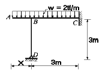
- 3.0 m
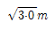
- 1.5 m
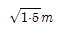
(정답률: 17%)
59. 목조의 토대에 관한 기술 중 옳지 않은 것은?
- 토대는 기초 위에 가로놓아 상부에서 오는 하중을 기초에 전달한다.
- 토대의 크기는 보통 기둥과 같이 하거나 다소 적게 한다.
- 토대의 모서리, T자형, ＋자형으로 접합되는 요소에 는 귀잡이토대를 설치한다.
- 토대와 토대의 이음은 턱걸이주먹장이음 또는 엇걸이 산지이음 등으로 한다.
(정답률: 62%)
60. 그림에서 인장력 N이 작용할 때 F8T, 4-M16를 사용한 경우 허용전단력의 크기는?
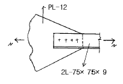
- 4.82tf
- 19.29tf
- 2.41tf
- 9.65tf
(정답률: 21%)
4과목: 건축설비
61. 전기배선설비에 있어 금속관에 부설되는 전선의 절연 피복을 포함한 총 단면적은 금속관내 단면적의 최대 얼마이하가 되도록 하는가?
- 10%
- 20%
- 30%
- 40%
(정답률: 25%)
62. 겨울철 실내 유리창 표면에 발생하기 쉬운 결로를 방지할수 있는 방법이 아닌 것은?
- 실내에서 발생하는 가습량을 억제한다.
- 실내공기의 움직임을 억제한다.
- 이중유리로 하여 유리창의 단열성능을 높인다.
- 난방기기를 이용하여 유리창 표면온도를 높인다.
(정답률: 49%)
63. 축전지 설비의 주요장치가 아닌 것은?
- 충전장치
- 제어장치
- 보안장치
- 청정시스템
(정답률: 53%)
64. 각 층마다 옥내소화전이 3개씩 설치되어 있는 건물에 필요한 옥내소화전용 물탱크의 최소 필요 용량은 어느 정도인가?
- 6.9m3
- 7.2m3
- 7.5m3
- 7.8m3
(정답률: 55%)
65. 다음 중 점검할 수 없는 은폐 장소에 적당치 않은 옥내배선의 공사방법은?
- 애자 사용 공사
- 목제 몰드 공사
- 합성 수지관 공사
- 케이블 공사
(정답률: 35%)
66. 공기조화방식이 아닌 것은?
- 2중 덕트 방식
- 팬코일 유니트 방식
- 탱크레스 부스터 방식
- 패키지 유니트 방식
(정답률: 38%)
67. 엘리베이터의 안전장치 중에서 카가 최상층이나 최하층에 서 정상 운행위치를 벗어나 그 이상으로 운행하는 것을방지하는 것은?
- 조속기(governor)
- 제한 스위치(limit switch)
- 카운터 웨이트(counter weight)
- 완충기(buffer)
(정답률: 59%)
68. 다음 급수방식에 대한 설명 중 맞는 것은?
- 수도직결방식은 수질오염의 가능성이 적다.
- 고가수조방식은 단수시에는 급수가 불가능하다.
- 고가수조식은 취급이 어려워 소규모 설비에 사용된다
- 압력수조방식은 압력을 항상 일정하게 유지할 수 있다.
(정답률: 62%)
69. 그림과 같은 방식으로 급수를 하고 있는 주택에서, 2층에 있는 샤워기에 급수가 원활히 이루어지기 위해서 필요한 수도본관의 압력은 최소 어느 정도 필요한가? (단, 샤워기까지의 수도미터, 밸브 및 배관 등에 의한 압력손실은 0.5kg/cm2이고, 샤워기의 최소필요압력은 0.7kg/cm2로 한다.)
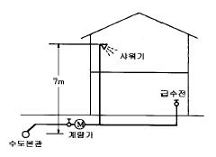
- 1.9kg/cm2
- 2.0kg/cm2
- 2.1kg/cm2
- 2.2kg/cm2
(정답률: 31%)
70. 감시제어반 설비에 있어서 제어의 종류와 표시법이 잘못 연결된 것은?
- 전원표시 - 오렌지색 램프
- 고장표시 - 부저 및 벨울림
- 정지표시 - 녹색램프
- 운전표시 - 적색램프
(정답률: 32%)
71. 단일 덕트 방식 중 변풍량 방식에 대한 설명으로 옳은 것은?
- 송풍온도를 일정하게 하고 실내부하변동에 따라 송풍량을 변화시킨다.
- 실내공기의 청정화를 요할 때 적당하다.
- 전개형 유니트를 사용하기 때문에 사용하지 않는 방의 송풍을 정지시킬 수 없다.
- 연간소비동력, 즉 에너지 소비가 정풍량 방식보다 크다.
(정답률: 41%)
72. 난방에 대한 설명이 옳게 된 것은?
- 증기난방은 증기의 유량 제어가 어려우므로 실온 조절이 곤란하다.
- 증기난방은 온수난방에 비해 소음이 적다.
- 증기난방에서 버킷의 자중과 그 부력과의 차에 의해밸브를 개폐하는 트랩을 플로트 트랩이라 한다.
- 밀폐식 팽창탱크는 저온수 난방에 주로 사용된다.
(정답률: 48%)
73. 복사 난방에 관한 설명 중 옳지 못한 것은?
- 실내의 온도분포가 균등하고 쾌감도가 높다.
- 방열기를 설치하지 않아 실내 바닥면의 이용도가 높다.
- 천장이 높은 실의 난방에는 사용할 수 없다.
- 구조체를 따뜻하게 하므로 예열시간이 길고 일시적인 난방에는 바람직하지 않다.
(정답률: 61%)
74. 용어와 단위를 짝지은 것 중에서 틀린 것은?
- 음의 세기의 레벨 - dB
- 음압 - dyne/cm2
- 광속 - ℓ m/m2
- 열관류율 - kcal/m2h℃
(정답률: 36%)
75. 증기난방설비에서 방열기의 소요방열면적이 100m2에서 급탕량의 최대가 600ℓ /h, 배관 및 여유부하가 35%인 경우 보일러의 정격출력은? (단, 증기난방 표준방열량은 650kcal/m2· h이며, 급탕의 온도는 70℃, 급수온도는 10℃ 이다.)
- 65,000kcal/h
- 101,000kcal/h
- 123,750kcal/h
- 136,350kcal/h
(정답률: 26%)
76. 특별고압계기용 변성기의 2차측 전로 및 고압용 또는 특별고압용 기계 기구의 철대 및 금속재 외함에 필요한 접지공사의 종류는?
- 제1종 접지공사
- 제2종 접지공사
- 제3종 접지공사
- 특별 제3종 접지공사
(정답률: 34%)
77. 고가수조의 용량을 V(m3)라면 양수펌프의 양수량Q(m3/HR)으로 알맞는 것은?
- Q=0.5 V
- Q=1.0 V
- Q=1.5 V
- Q=2.0 V
(정답률: 33%)
78. 에스컬레이터에 관한 설명으로 틀린 것은?
- 경사는 30° 이하로 한다.
- 정격속도는 30m/분 이하로 한다.
- 기계실이 필요하며 엘리베이터에 비해 점유면적이 크다.
- 건축에 걸리는 하중이 최하층에 집중되지 않고 각 층에 분담되어 걸린다.
(정답률: 54%)
79. 트랩의 봉수파괴 원인 중 자기사이폰 작용에 대한 설명으로 옳지 않은 것은?
- 만류, 연속류를 비만류 또는 비연속류화하면 효과적으로 방지할 수 있다.
- 윗층의 기구로부터 배수가 배수수직관내를 급속히 흘러 하층 기구의 유출관 부분을 통과할 때 수평주관내부의 공기를 감압시켜 봉수가 파괴되는 현상이다.
- 각개통기관을 기구배수관에 접속하여 공기를 유입시키면 자기사이폰 작용을 막을 수 있다.
- 기구에 각 단면적비가 큰 트랩을 설치하면 자기사이폰 작용의 방지에 효과적이다.
(정답률: 27%)
80. 유로(流路)의 패쇄나 유량의 계속적인 변화에 의한 유량조절에 적합한 것으로 스톱 밸브라고도 불리우는 것은?
- 앵글밸브(angle valve)
- 게이트밸브(gate valve)
- 체크밸브(check valve)
- 글로브밸브(globe valve)
(정답률: 16%)
5과목: 건축법규
81. 용적률의 기준에 120% 이하의 범위안에서 조례가 정하는 비율로 할 수 있는 규정의 내용과 관계가 없는 것은?
- 용도지역
- 대지에 접한 도로의 너비와 길이
- 대지면적
- 건축면적
(정답률: 16%)
82. 다음 면적, 높이등의 산정방법에 대한 설명 중 틀린것은?
- 계단탑 및 옥상에 설치하는 물탱크는 바닥면적에 산입되지 아니한다.
- 용적률의 산정에 있어서는 지하층의 면적과 지상층의 주차용으로 사용되는 면적을 연면적에서 제외한다.
- 지하 3층, 지상 6층 건축물의 층수는 9층이다.
- 공동주택으로서 지상층에 설치한 기계실의 경우에는 당해부분을 바닥면적에 산입하지 아니한다.
(정답률: 58%)
83. 그림과 같은 주차전용 건축물을 건축할 경우 A 점의 최고 높이는?
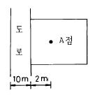
- 15m
- 18m
- 24m
- 36m
(정답률: 22%)
84. 건축선에 관한 내용으로 옳은 것은?
- 소요너비에 미달되는 너비의 도로인 경우에는 그 중심선으로부터 당해 소요너비에 상당하는 수평거리를 후퇴한 선으로 한다.
- 지상 및 지표하의 건축물은 건축선의 수직면을 넘어서는 아니된다.
- 도로면으로부터 높이 5.0m이하에 있는 창문은 개폐시 건축선의 수직면을 넘어서는 아니된다.
- 6m 도로가 직각으로 교차하는 도로모퉁이에서의 건축선은 3m씩 후퇴한 2점을 연결한 선으로 한다.
(정답률: 27%)
85. 용도지역안에서 정할 수 있는 건폐율이 잘못된 것은?
- 유통상업지역 - 80%이하
- 제2종 전용주거지역 - 60%이하
- 보전녹지지역 - 20%이하
- 계획관리지역 - 40%이하
(정답률: 31%)
86. 층고 3m, 각 층 바닥면적 1,000m2이며 매층 150m2마다 방화구획으로 구획한 15층 오피스텔에서 최소한의 비상용 승강기의 댓수는?
- 1대
- 2대
- 3대
- 필요없다.
(정답률: 28%)
87. 출구와 입구를 구분하지 않고 주차대수의 규모가 60대인 노외주차장을 설치하는 경우에 당해 주차장 출입구의 최소너비는?
- 3.5 m
- 4.5 m
- 5.5 m
- 6.5 m
(정답률: 43%)
88. 공동주택의 지상층에 설치하면 바닥면적에서 제외되는 부분이 아닌 것은?
- 기계실
- 조경시설
- 종교시설
- 어린이놀이터
(정답률: 55%)
89. 대지의 안전에 관한 기술 중 틀린 것은?
- 습한 토지는 성토 또는 지반의 개량 등 필요한 조치를 하여야 한다.
- 성토하는 부분의 경사도가 1:1.5 이상으로서 높이가 1m 이상인 부분에는 옹벽을 설치하여야 한다.
- 옹벽에는 3m2마다 하나 이상의 배수구멍을 설치하여야 한다.
- 대지는 반드시 인접하는 도로면보다 높아야 한다.
(정답률: 42%)
90. 다음 시설중 지방건축위원회의 심의를 받지 않아도 허가받을 수 있는 건축물은?
- 바닥면적의 합계가 6000m2의 종합병원
- 17층의 사무소
- 연면적 10000m2의 아파트
- 16층의 관광호텔
(정답률: 23%)
91. 건축면적 800m2인 건축물의 층수에 산입되지 아니하는 계단탑의 바닥면적으로서 최대로 할 수 있는 면적은? (단, 사업계획승인 대상인 공동주택중 세대별 전용면적이 85m2이하인 경우는 제외)
- 80m2
- 100m2
- 160m2
- 200m2
(정답률: 46%)
92. 다음 중 노외주차장의 출구와 입구를 설치할 수 있는 곳은?
- 횡단 보도에서 5m이내의 도로의 부분
- 장애인복지시설의 출입구로부터 20m이내의 도로의 부분
- 중학교의 출입구로부터 20m이내의 도로의 부분
- 종단구배가 10%를 초과하는 도로
(정답률: 49%)
93. 건축법령상 1이상의 필지의 일부를 하나의 대지로 할 수 있는 경우가 아닌 것은?
- 하천점용허가를 받은 경우 그 허가받은 부분의 토지
- 사용승인을 신청하는 때에 분필할 것을 조건으로 하여 건축허가를 하는 경우 그 분필대상이 되는 부분의 토지
- 도시계획시설이 결정· 고시된 경우 그 결정· 고시가 있는 부분의 토지
- 산지전용허가를 받은 경우 그 허가받은 부분의 토지
(정답률: 20%)
94. 건축물의 높이를 정남방향의 인접대지경계선으로부터 일정거리를 띄어야 하는 경우가 아닌것은?
- 정남방향으로 공원· 하천등 건축이 금지된 공지에 접하는 대지인 경우
- 도시개발구역인 경우
- 택지개발예정지구인 경우
- 대지조성사업지구인 경우
(정답률: 35%)
95. 오피스텔의 개별난방방식에 관한 기술 중 옳지 아니한것은?
- 보일러의 연도는 내화구조일 것
- 보일러는 거실 외의 곳에 설치할 것
- 보일러실의 윗부분에는 0.5m2 이상인 면적의 환기창을 설치할 것
- 난방구획마다 내화구조로 된 벽· 바닥과 갑종방화문 을종방화문으로 된 출입문으로 구획할 것
(정답률: 60%)
96. 도시기본계획의 정비는 몇 년 단위로 하는가?
- 5년
- 10년
- 15년
- 20년
(정답률: 26%)
97. 개별관람석 바닥면적이 1,500m2인 공연장의 관람석 출구의 유효너비를 2.0m로 하는 경우에 출구는 몇 개소이상이 필요하는가?
- 3개소
- 4개소
- 5개소
- 6개소
(정답률: 32%)
98. 국토의 계획 및 이용에 관한 법률상의 시설보호지구의 세분된 내용이 아닌 것은?
- 학교시설
- 공용시설
- 항만의 보호를 위하여 필요한 지구
- 중요시설물
(정답률: 27%)
99. 각각의 지역에서 조례에서도 건축이 허용되지 않는 것은?
- 제1종일반주거지역 - 안마시술소
- 일반상업지역 - 기숙사
- 일반공업지역 - 분뇨 및 쓰레기처리시설
- 자연녹지지역 - 아파트형공장
(정답률: 33%)
100. 주차단위구획에 대한 설명 중 옳지 않은 것은?
- 평행주차인 일반주차장 - 너비 2.0m이상, 길이 6.5m이상
- 직각주차인 일반주차장 - 너비 2.3m이상, 길이 5.0m이상
- 지체장애인 전용주차장 - 너비 3.3m이상, 길이 5.0m이상
- 주거지역의 보도와 차도의 구분이 없는 도로에서의평행주차 - 너비 2.0m이상, 길이 5.0m이상
(정답률: 47%)